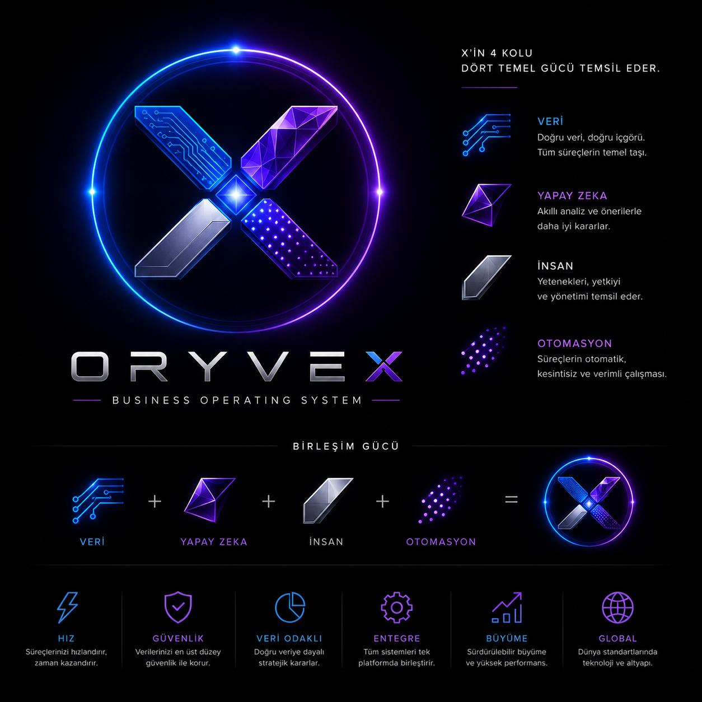

Verimlilik
Daha akıllı süreçler
İŞİNİZİ DAHA AKILLI YÖNETİN
Dijital Dönüşümde Güçlü Çözümler
ORYVEX Dijital Systems; işletmeler için modern, güvenilir ve ölçeklenebilir dijital çözümler geliştirir. Operasyonlarınızı kolaylaştırın, verimliliğinizi artırın ve tüm sistemlerinizi tek bir dijital mimaride yönetin.
CORE
Merkezi Yönetim
AI
Akıllı Otomasyon
API
Sistem Entegrasyonu
ORYVEX NETWORK
Entegrasyon
Sistemler arası bağlantı
Güvenlik
Kontrollü altyapı
Destek
Sürekli operasyon
ORYVEX ÇÖZÜMLERİ
İşletmenizin dijital altyapısını tek yapıda birleştirin.
İhtiyaç duyduğunuz yazılımı yalnız geliştirmiyoruz; operasyon, veri, otomasyon ve entegrasyon katmanlarını birlikte tasarlıyoruz.
01
Operasyon Sistemleri
İş süreçlerinizi dijitalleştiren, takip ve kontrolü tek merkezde toplayan özel sistemler.
02
Yapay Zekâ & Otomasyon
Tekrarlanan operasyonları azaltan ve karar süreçlerini destekleyen akıllı iş akışları.
03
API & Entegrasyon
Farklı platformların, veri kaynaklarının ve servislerin kontrollü şekilde birlikte çalışması.
04
Veri Yönetimi
Operasyon verisinin merkezi, izlenebilir ve ölçeklenebilir bir yapıda yönetilmesi.
05
Web & Dijital Platform
Kurumsal web sistemlerinden özel operasyon panellerine kadar uçtan uca dijital ürünler.
06
Kontrol & Raporlama
Canlı durum, işlem geçmişi, performans ve yönetim verilerinin tek ekranda görünmesi.
ORYVEX ECOSYSTEM
Fikir değil. Çalışan sistemler.
ORYVEX ekosistemindeki dijital ürünler bağımsız çalışabilir, gerektiğinde merkezi altyapıyla entegre olabilir.
OX
CORE
ORYVEX CORE
ORYVEX dijital organizasyonunun merkezi kontrol, koordinasyon ve operasyon altyapısı.
Sistemi Görüntüle →
Ş
AKTİF
Şantiye OS
İnşaat operasyonlarında beton, demir, iş makinesi, tedarikçi ve saha süreçlerinin dijital yönetimi.
S
PİLOT
ORYVEX SYNC
Çoklu satış kanallarında ürün, sipariş, stok ve operasyon verisinin senkronizasyon katmanı.
C
GELİŞİYOR
Cari Takip OS
Cari hesap, tahsilat, ödeme, kasa, banka ve hareket yönetimini sade bir operasyon ekranında birleştirir.
MERKEZİ KONTROL KATMANI
Bağlan. Ama bağımlı olma.
ORYVEX CORE, uygulamaları tek bir sağlayıcıya kilitlemek yerine servisleri ortak sözleşmeler ve kontrollü entegrasyon katmanları üzerinden yönetmek üzere tasarlanır.
✓ Merkezi servis yönetimi
✓ Sağlık ve durum kontrolleri
✓ Yetki ve güvenlik katmanı
✓ Audit ve doğrulama
ORYVEX CORE →
ORYVEX
CORE
GitHub
Cloud
Data
AI
API
Apps
SEKTÖRLER
Tek teknoloji yaklaşımı. Farklı operasyonlar.
İnşaat
Saha, maliyet, tedarik ve ilerleme yönetimi.
E-Ticaret
Ürün, kanal, sipariş ve stok operasyonları.
Hizmet
Müşteri, iş emri ve operasyon süreçleri.
Perakende
Satış, ürün ve operasyon entegrasyonu.
ORYVEX MARKA FELSEFESİ
Dört Güç. Tek Sistem.
ORYVEX logosundaki X; veri, yapay zekâ, insan ve otomasyonun aynı merkezde buluşmasını temsil eder.

Veri
Doğru veri, doğru içgörü. Tüm süreçlerin temel taşı.
Yapay Zekâ
Akıllı analiz ve önerilerle daha iyi kararlar.
İnsan
Yetenek, yetki, sorumluluk ve yönetim.
Otomasyon
Süreçlerin sistematik, kesintisiz ve verimli çalışması.
Merkezdeki ışıklı elmas birleşimi; dıştaki mavi-mor halka ise bütünlüğü, sürekliliği ve ORYVEX ekosistemini simgeler.
HAKKIMIZDA
Dijital sistemi işletmenin gerçek parçası haline getiriyoruz.
ORYVEX; yazılımı tek başına bir ürün olarak değil, işletmenin operasyon altyapısının parçası olarak ele alır.
Tasarım, geliştirme, entegrasyon, otomasyon ve kontrol katmanlarını aynı mimari düşünce içinde birleştirerek sürdürülebilir dijital sistemler oluşturur.
BİRLİKTE ÇALIŞALIM
İşiniz için doğru sistemi birlikte kuralım.
Dijital dönüşüm, özel yazılım, otomasyon veya sistem entegrasyonu için ORYVEX ile iletişime geçin.